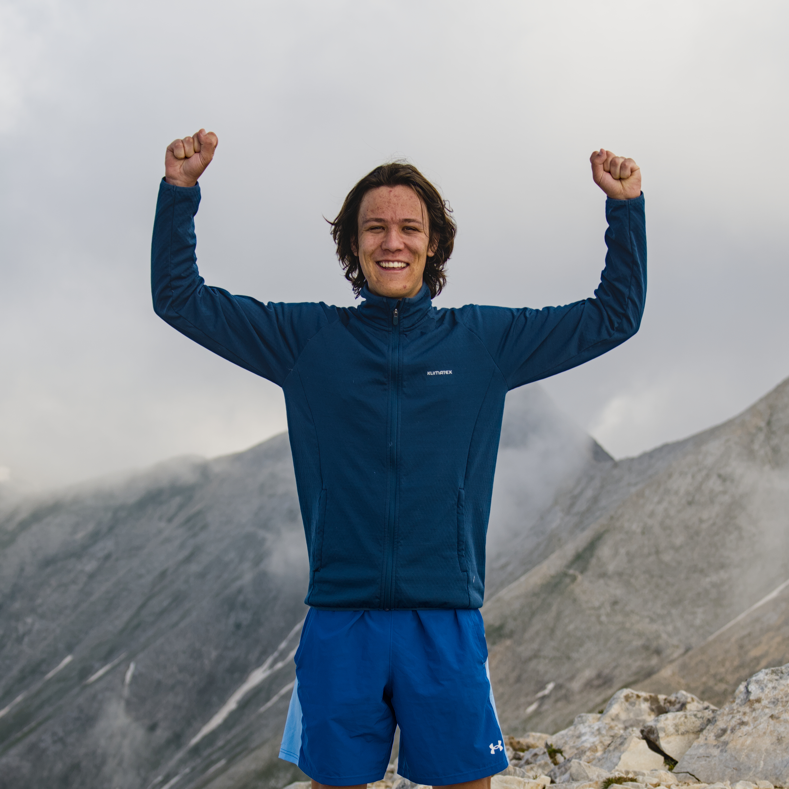

Mathematical modeling Bc. student, Charles University.
I am a student of bachelor program Mathematical modeling on Faculty of Mathematics and Physics of Charles University.
Analysis of moisture sources and transport corridors of Atmospheric River connected with 2002 floods in Czechia. Supervised by Natália M. Crespo.